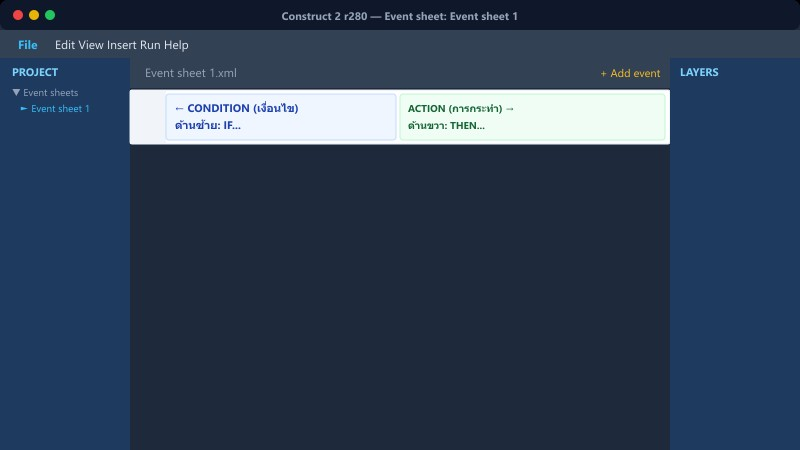
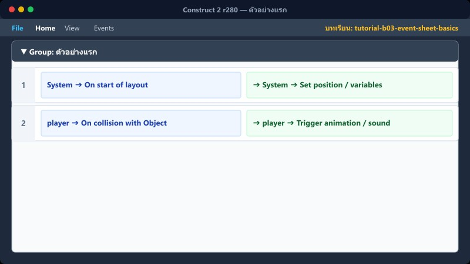
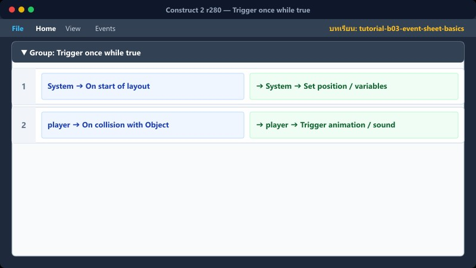
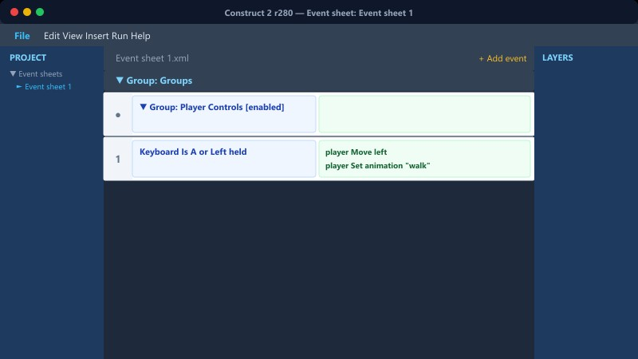
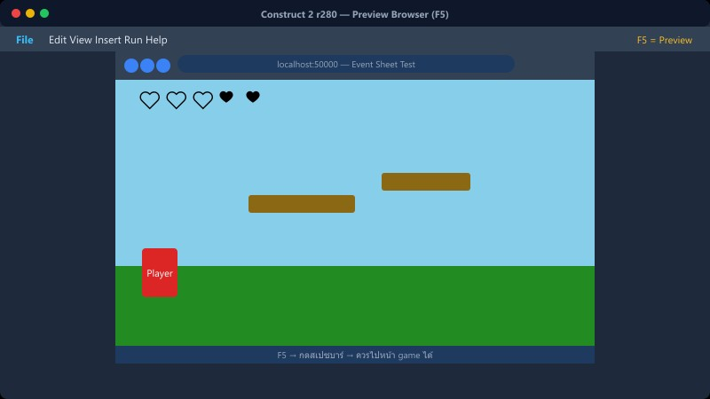

บทที่ B3 • พื้นฐาน Construct 2
Event Sheet เบื้องต้น
เงื่อนไข (Condition) • การกระทำ (Action) • การทำงานของระบบ • การจัดกลุ่ม
1 เปิด Event Sheet

คลิกแท็บ Event Sheet ด้านบน หรือดับเบิลคลิกใน Project bar เพื่อเปิดหน้าต่างเขียนโค้ด
โครงสร้างของ Event Sheet แบ่งเป็น 2 ฝั่ง:
1. ด้านซ้าย = Condition (เงื่อนไข) ว่าจะเกิดอะไรขึ้นเมื่อไหร่ เช่น "เมื่อกดสเปซบาร์"
2. ด้านขวา = Action (สิ่งที่ทำ) ผลลัพธ์ที่จะเกิดขึ้น เช่น "ตัวละครกระโดด"
ระบบจะประมวลผล Event ทำงานจากบนลงล่าง ทุกเฟรม (60 ครั้งต่อวินาที)
📍 ที่ไหนใน C2: Project bar → Event sheets หรือแท็บด้านบนถัดจาก Layout
2 ตัวอย่างแรก

1. ดับเบิลคลิก ในพื้นที่ว่างของ Event sheet
2. หน้าต่าง Add event จะขึ้นมา ให้ดับเบิลคลิกที่ Keyboard
3. เลือก On key pressed แล้วกดปุ่ม Space ที่คีย์บอร์ด คลิก Done
4. ฝั่งขวา คลิกปุ่ม Add action
5. ดับเบิลคลิก System → เลือก Go to layout → พิมพ์ "game"
Keyboard ➔ On Space pressed
System ➔ Go to layout "game"
📍 ที่ไหนใน C2: หน้า Event sheet → ดับเบิลคลิก หรือ คลิกขวา → Add event → เลือก Keyboard
3 Sub-event และ Else
1. การเพิ่ม Sub-event: คลิกที่ Event เดิมให้เกิดแถบสีเหลืองรอบกรอบ → คลิกขวา → เลือก Add → Add sub-event (หรือกด S)
2. การเพิ่ม Else: คลิกที่ Event เดิมให้เกิดแถบสีเหลือง → คลิกขวา → เลือก Add → Else (หรือกด X)
ช่วยในการซ้อนเงื่อนไขเหมือน IF ซ้อน IF
System ➔ Is score > 100
System ➔ Go to layout "win"
System ➔ Else
System ➔ Go to layout "lose"
📍 ที่ไหนใน C2: คลิกขวาที่ Event เดิม → Add → Add sub-event หรือ Add → Else
4 Trigger once while true

1. สร้างเงื่อนไขแรก เช่น Player → Is overlapping Enemy
2. คลิกขวา ที่กรอบเงื่อนไขนั้น → Add → Add another condition (กด C)
3. เลือก System → Trigger once while true
* ใช้ป้องกัน Action ทำงานซ้ำทุกเฟรมต่อเนื่อง เช่น การลดเลือด ควรลดแค่ครั้งเดียวเมื่อโดนชน ไม่ใช่ลด 60 ครั้งต่อวินาที
Player ➔ Is overlapping Enemy
System ➔ Trigger once while true
System ➔ Subtract 1 from Heart
📍 ที่ไหนใน C2: Add condition → System → Trigger once while true
5 Event Group

1. คลิกขวา ในพื้นที่ว่างของ Event sheet
2. เลือก Add group
3. ตั้งชื่อในช่อง Name เช่น Player_Movement หรือ Health_System
4. สามารถลาก Event อื่นๆ เข้าไปใส่ใน Group ได้
ใช้จัดกลุ่ม Event ให้อ่านโค้ดง่ายขึ้น และสามารถเปิด/ปิดการทำงานทั้ง Group ได้ (Active on start: Yes/No)
📍 ที่ไหนใน C2: หน้า Event sheet → คลิกขวา → Add group
⚠️ ข้อผิดพลาดที่พบบ่อย

- Action ไม่มี Condition: จะทำงานทุกเฟรม (60 ครั้งต่อวิ) ทำให้เกิดปัญหาง่าย เช่น เสียงดังไม่หยุด, คะแนนพุ่งพรวด
- ลืมใส่ Trigger once: ทำให้ระบบหัวใจหรือคะแนนถูกประมวลผลรัวๆ จนหมดหลอดในพริบตา
- เขียน Event ผิดแผ่น (Event Sheet): ตรวจสอบให้ดีว่า Layout ปัจจุบันผูกกับ Event Sheet แผ่นไหน (ดู Tab บนสุด)